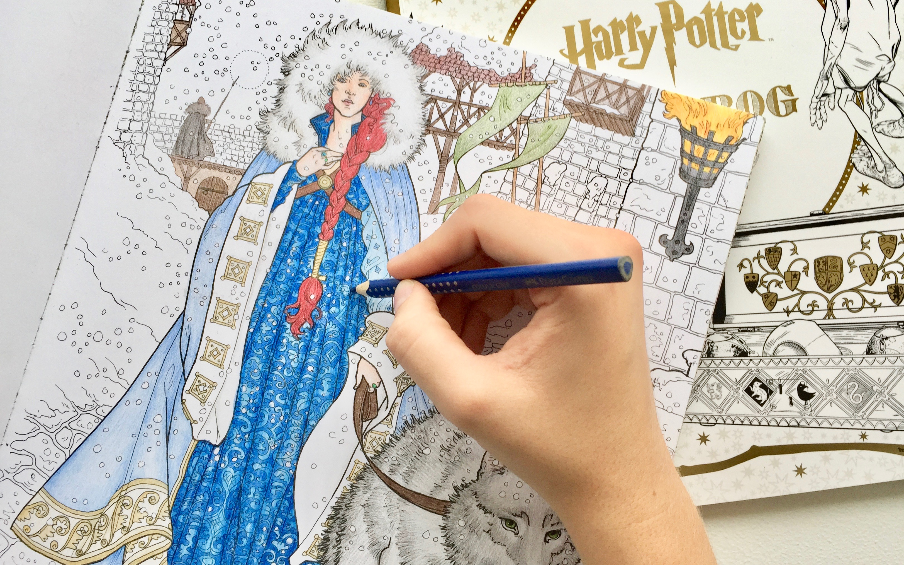

STRESS RELEASE
Find din indre ro
- Tips og tricks til kreativ meditation
af Sofie Grønberg
Med diverse streaming tjenester der findes i dag kan det være svært at slukke skærmene. Men for at slå hjernen væk fra hverdagen og lukke op for de kreative tanker kan det alligevel være nødvendigt.
Her kan du læse om tips og tricks der via kreativiteten, kan få hjerterytmen ned mens tankerne kan få frit løb. Med udgangspunkt i tre gode bøger kan du her lære at skabe en oase væk fra en stresset hverdag ved hjælp af kreativ meditation.
Hvis du ønsker at slippe fuldstændig væk fra hverdagens mange skærme og få pulsen helt ned, kan farvelækning være svaret for dig.
Der findes alverdens forskellige farvelækningsbøger med både stort og småt. Og kan man ikke helt slippe tanken om film og serier kan selv dette findes som farvelækningsbøger. Bantam Books og Gyldendal laver nogle af de flotteste og mest detaljerede farvelækningsbøger med temaer som bl.a. Harry Potter og Game Of Thrones.
Når du har fundet den rigtige bog og farver at give dig i kast med, kan det nogle gange synes kedeligt at skulle farvelække i længere tid ad gangen. Her kan jeg anbefale at finde en spændende pod cast at lytte til imens du tegner.
Nu gælder det blot om at slappe af og lade tankerne strømme!
Hvis din kreative meditation også skal lære dig noget nyt, kan et andet bud på kreativ meditation være en kalligrafi bog.
Dette kræver en lille smule mere koncentration, da man lære at skrive helt nyt og spændende skiftstil. Men frygt ej der er masser af afslapning i vente. Skaffer du dig bl.a. en kalligrafi bog fra Panduro vil hver en side lede dig igennem processen, så du kan læne dig tilbage og nyde din nye egenskab.
Igen vil et godt tip være at sætte en underholdende eller spændende pod cast på mens du øver dig i de krøllede bogstaver. Nyd at det faktisk kan være både sjovt og givende at lægge skærmen fra sig.
Det sidste tip er henvendt til de øvede strikkere, som ønsker at udvide deres strikning til en meditationsform.
Er du en der strikker meget, kan du helt bestemt nikke genkendende til at det kan give hold i nakken og ondt i fingrene og ryggen. Et problem der let kan løses.
Bogen Strik og stræk giver dig adskillige strækøvelser der let kan hjælpe dig af med din stive nakke. Derudover indeholder denne bog også masser af lækre strikkeopskrifter der inspirerer til velvære. Find den opskrift der passer til dig og brug strækøvelserne hver gang du møder modgang i fingrene. På den måde kan du nyde dit håndværk 100% afslappet.